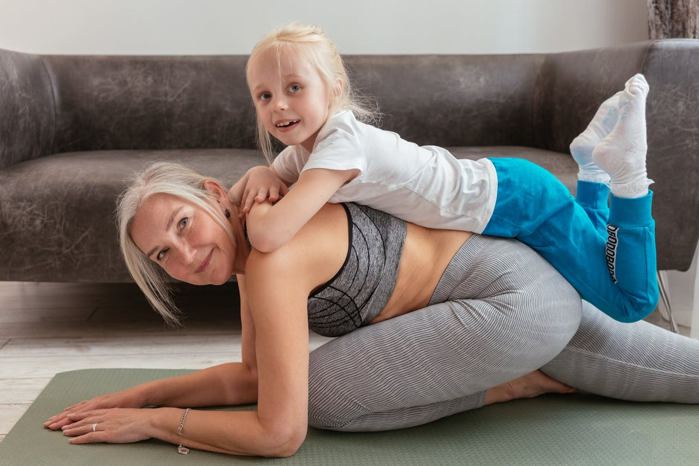
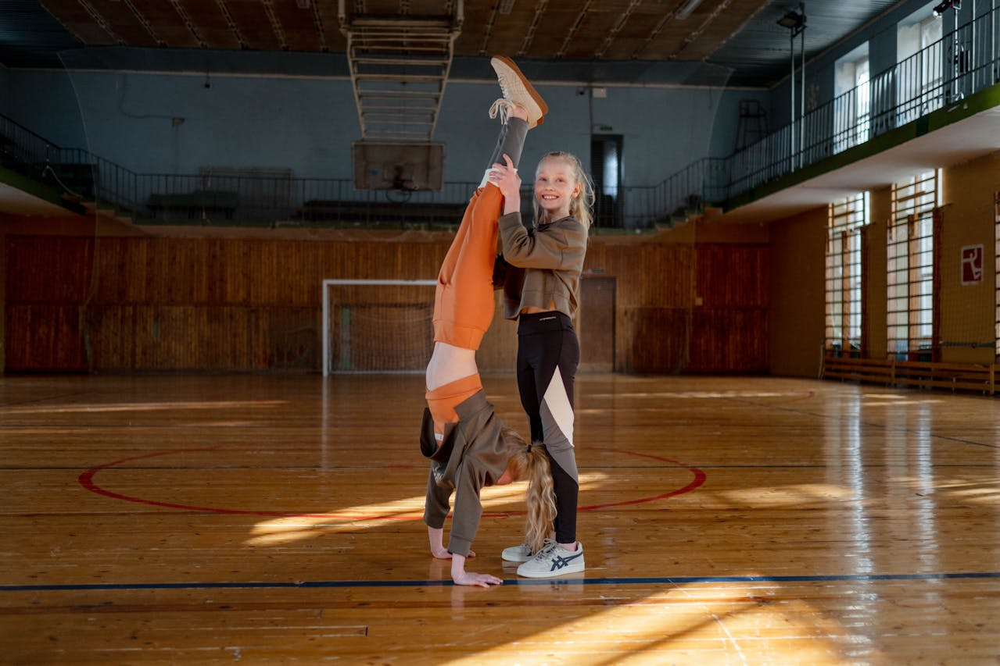

Stay Safe While Learning Your Handstand
Simple precautions that protect your body and build confidence.

Warm Up Before You Begin
- Always warm up your wrists shoulders, and arms before trying a handstand. Gentle stretches prepare the body and reduce the risk of strain or injury.
- A warm body moves better and balances more easily. Never skip this step, even for a short practice.

Practice on a Soft Surface
- Choose a mat, carpet or grassy area for practice. Soft surfaces protect your hands, head, and shoulders if you lose balance.
- This helps beginners feel safer and more confident. Avoid hard or slippery floors.

Use Support When Learning
- Beginners should practice near a wall or with adult supervision. Support helps control balance and prevents sudden falls.
- Using help builds strength gradually and safely. Independence comes with time and practice.
Listen to Your Body
- Stop immediately if you feel pain or dizziness. A handstand should feel challenging but never painful.
- Rest when needed and try again later. Learning slowly keeps the body healthy and happy.